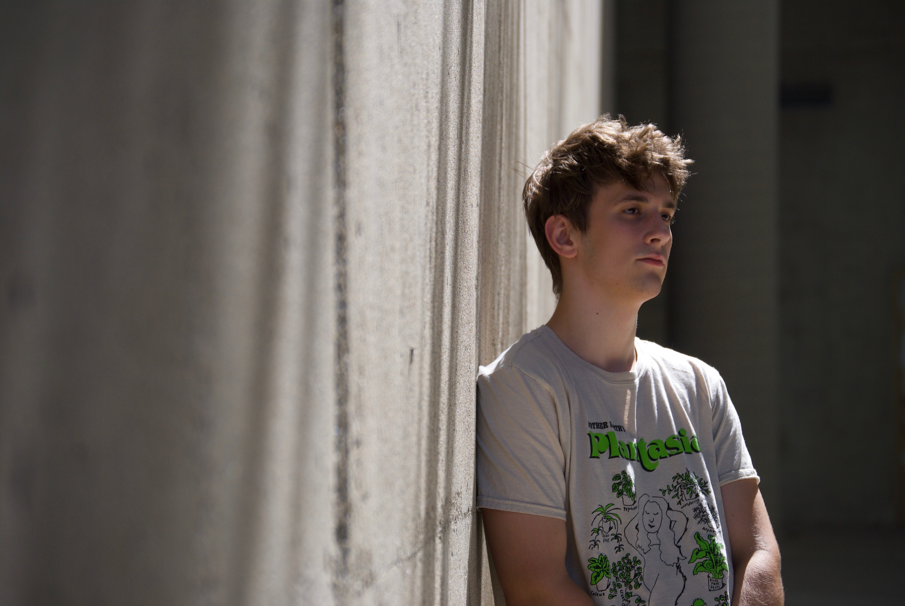

I am a Communication Design Undergraduate Student at the University of Cincinnati's College of Design, Art, Architecture, and Planning. I am a competitive designer seeking opportunities for interdisciplinary work as well as work in the graphic communication design field. I have a thirst for knowledge and understanding and am seeking to advance my skillset, knowledge, and workflow. I thrive in environments where I am directed yet still retain the freedom of creativity and personal influence over my work. I am comfortable acting as a project leader or as part of the team. In my free time I enjoy practicing web design and tinkering with code.